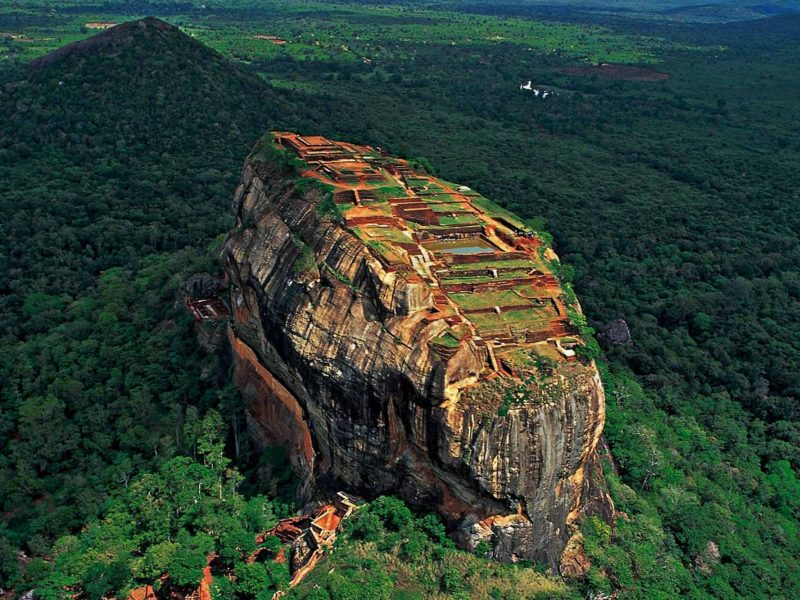
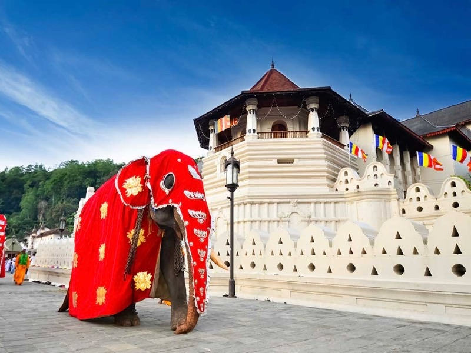
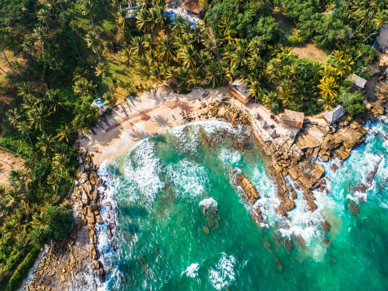

Featured Tours

Courtyards & Verandahs – Geoffrey Bawa
Explore the masterpieces of Geoffrey Bawa across Sri Lanka’s cultural, mountain, and coastal landscapes.
View Details

Cultural Triangle Adventure
Discover the ancient wonders of Sigiriya, Polonnaruwa, and the Sacred City of Anuradhapura.
View Details

Kandy & Hill Country Escapade
Experience the lush tea plantations, scenic mountains, and cultural heritage of Kandy.
View Details

Coastal Retreat & Beach Escape
Relax along Sri Lanka’s pristine beaches and explore charming coastal towns.
View Details